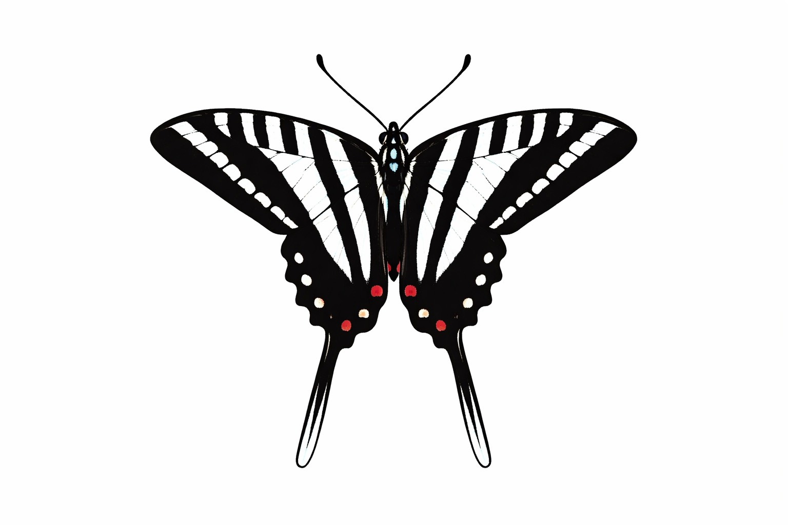

Modeled connectivity zones predict zebra swallowtail occurrence by linking riparian habitats and pawpaw host plant distributions.
Habitat fragmentation separates critical resources for specialist species. Zebra swallowtails rely exclusively on pawpaw trees, which are often found in riparian habitats.
Develop and evaluate a connectivity model based on riparian zones and pawpaw distribution to predict zebra swallowtail occurrence.
Observation data from iNaturalist was combined with river datasets and converted into raster layers. A resistance surface and least-cost path analysis were used to model movement corridors between habitat patches.
Observations occurred significantly closer to modeled connectivity zones, supporting the effectiveness of the model.
Connectivity between riparian zones plays a key role in zebra swallowtail distribution and could guide conservation efforts.
Access the full GIS model, data, and analysis code used in this project.
View Repository →